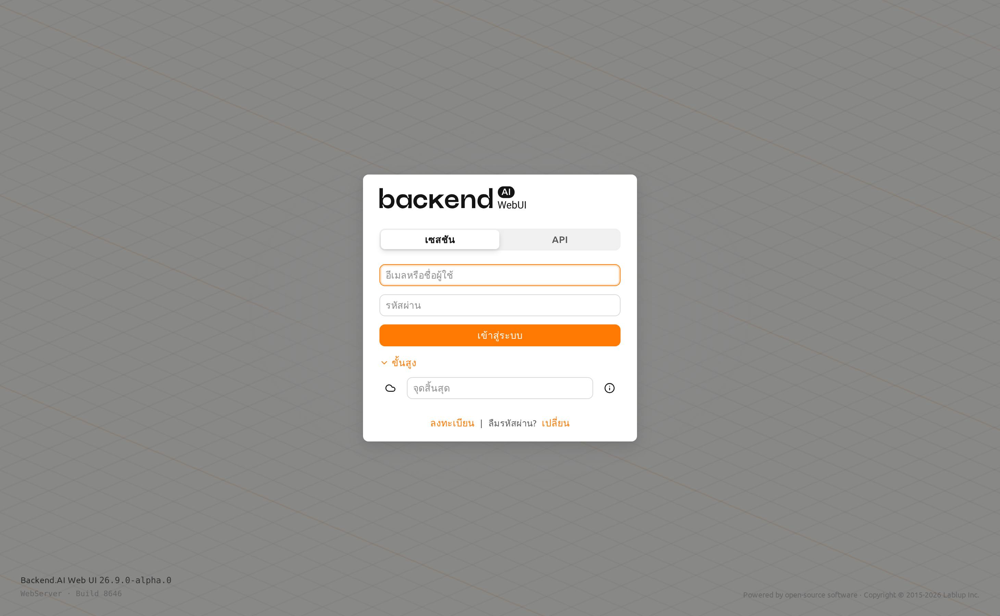
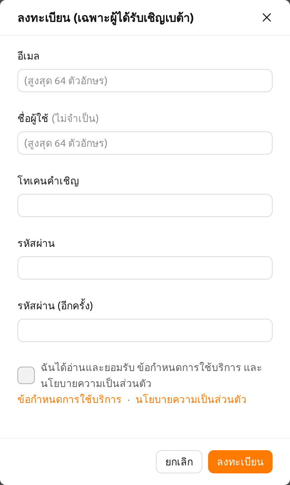
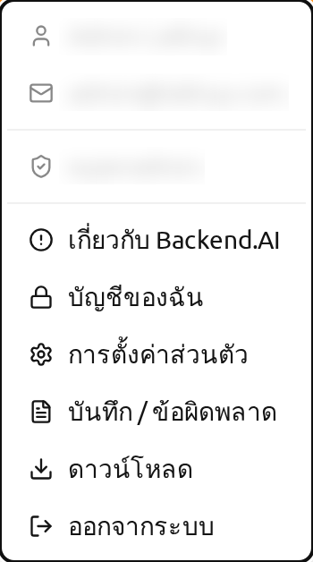
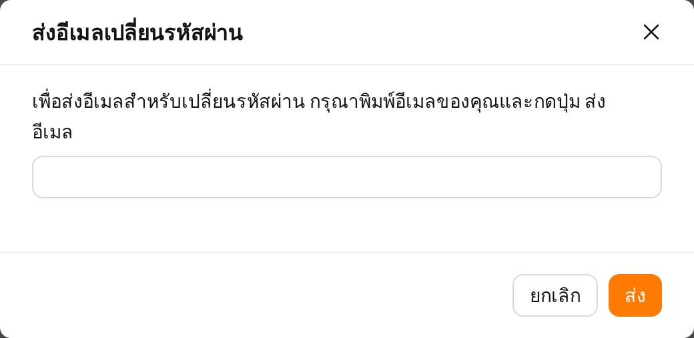
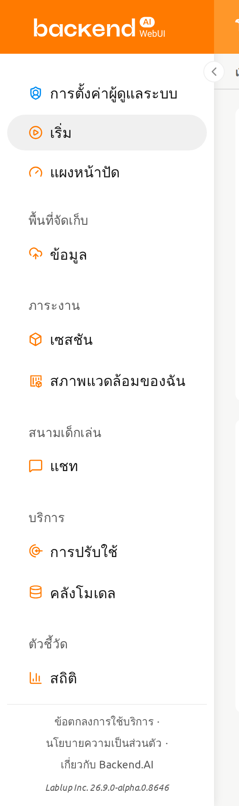
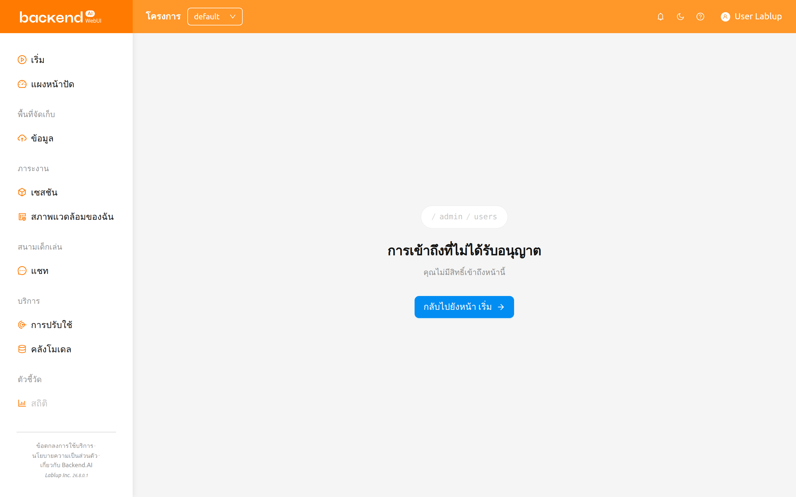

ลงทะเบียนและเข้าสู่ระบบ#
ลงทะเบียน#
เมื่อคุณเปิด WebUI กล่องโต้ตอบเข้าสู่ระบบจะปรากฏขึ้น หากคุณยังไม่ได้ลงทะเบียน ให้คลิกลิงก์ ลงทะเบียน ที่ด้านล่างของกล่องโต้ตอบ

กรอกข้อมูลที่จำเป็น อ่านและยอมรับข้อกำหนดในการให้บริการ / นโยบายความเป็นส่วนตัว และคลิกปุ่ม ลงทะเบียน ขึ้นอยู่กับการตั้งค่าของระบบ อาจต้องกรอกโทเค็นการเชิญเพื่อลงทะเบียน อีเมลยืนยันอาจถูกส่งเพื่อยืนยันว่าอีเมลนั้นเป็นของคุณ หากมีการส่งอีเมลยืนยัน คุณจะต้องอ่านอีเมลและคลิกลิงก์ภายในเพื่อผ่านการตรวจสอบก่อนที่จะสามารถเข้าสู่ระบบด้วยบัญชีของคุณได้

ขึ้นอยู่กับการตั้งค่าเซิร์ฟเวอร์และการตั้งค่าปลั๊กอิน อาจไม่อนุญาตให้ผู้ใช้ที่ไม่ระบุตัวตนลงทะเบียน ในกรณีนี้โปรดติดต่อผู้ดูแลระบบของคุณ
เพื่อป้องกันไม่ให้ผู้ใช้ที่ไม่หวังดีเดารหัสผ่านของผู้ใช้ รหัสผ่านต้องมีความยาวมากกว่า 8 ตัวอักษร และมีตัวอักษร ตัวเลข และอักขระพิเศษอย่างน้อยอย่างละ 1 ตัว
เข้าสู่ระบบ#
ป้อนอีเมล (หรือชื่อผู้ใช้) และรหัสผ่าน จากนั้นคลิกปุ่ม เข้าสู่ระบบ
หน้าจอเข้าสู่ระบบจะแสดงพื้นหลังแบบเคลื่อนไหว Diagonal Weave ด้านหลังกล่องโต้ตอบเข้าสู่ระบบ แอนิเมชันจะถูกปิดใช้งานโดยอัตโนมัติหากระบบปฏิบัติการของคุณตั้งค่าให้ลดการเคลื่อนไหว ข้อมูลเวอร์ชันและ build ของแอปพลิเคชันจะแสดงที่มุมล่างซ้าย และข้อมูลลิขสิทธิ์จะแสดงที่มุมล่างขวาของหน้าจอ ช่องแรกจะถูกโฟกัสโดยอัตโนมัติเมื่อกล่องโต้ตอบเข้าสู่ระบบเปิดขึ้น โดยเป็นช่องอีเมล/ชื่อผู้ใช้ในโหมด เซสชัน หรือช่อง API Key ในโหมด API
โหมดการเชื่อมต่อ#
หากผู้ดูแลระบบเปิดใช้งาน ตัวเลือกโหมดจะปรากฏที่ด้านบนของกล่องโต้ตอบเข้าสู่ระบบ ให้คุณเลือกระหว่างโหมด เซสชัน และโหมด API
- เซสชัน: โหมดเข้าสู่ระบบมาตรฐาน ป้อนอีเมล/ชื่อผู้ใช้และรหัสผ่านเพื่อยืนยันตัวตน โหมดนี้เป็นโหมดเริ่มต้นสำหรับผู้ใช้ส่วนใหญ่
- API: เข้าสู่ระบบโดยใช้คีย์แพร์ API ป้อน API Key และ Secret Key แทนอีเมลและรหัสผ่าน โหมดนี้เหมาะสำหรับการเข้าถึงแบบโปรแกรม
API Endpoint#
คลิกลิงก์ ขั้นสูง เพื่อขยายส่วนการตั้งค่า endpoint ในฟิลด์ API Endpoint ให้ป้อน URL ของ Backend.AI Webserver ที่ทำหน้าที่ส่งต่อคำขอไปยัง Manager
ขึ้นอยู่กับการติดตั้งและสภาพแวดล้อมการตั้งค่าของ Webserver อาจมีการกำหนดค่า endpoint ไว้แล้วและไม่สามารถปรับแต่งได้
Backend.AI เก็บรหัสผ่านของผู้ใช้อย่างปลอดภัยผ่านการแฮชแบบทางเดียว โดยใช้ BCrypt ซึ่งเป็นแฮชรหัสผ่านเริ่มต้นของ BSD ดังนั้นแม้แต่ผู้ดูแลเซิร์ฟเวอร์ก็ไม่สามารถทราบรหัสผ่านของผู้ใช้ได้
SSO เข้าสู่ระบบ (SAML / OpenID)#
หากผู้ดูแลระบบได้ตั้งค่า SSO (Single Sign-On) ปุ่มเข้าสู่ระบบเพิ่มเติมอาจปรากฏด้านล่างปุ่ม เข้าสู่ระบบ มาตรฐาน
- เข้าสู่ระบบด้วย SAML: ยืนยันตัวตนโดยใช้ผู้ให้บริการระบุตัวตน SAML ขององค์กร
- เข้าสู่ระบบด้วย [ชื่อ Realm]: ยืนยันตัวตนโดยใช้ผู้ให้บริการ OpenID Connect ป้ายกำกับปุ่มจะแสดงชื่อ realm ที่ผู้ดูแลระบบกำหนดไว้
คลิกปุ่ม SSO ที่เหมาะสมเพื่อเปลี่ยนเส้นทางไปยังผู้ให้บริการระบุตัวตนขององค์กรเพื่อยืนยันตัวตน
ตัวเลือกเข้าสู่ระบบ SSO จะแสดงเฉพาะเมื่อผู้ดูแลระบบเปิดใช้งานเท่านั้น
OTP เข้าสู่ระบบ (การยืนยันตัวตนสองขั้นตอน)#
หากเปิดใช้งานการยืนยันตัวตนสองขั้นตอน (2FA) สำหรับบัญชีของคุณ ฟิลด์ OTP (รหัสผ่านใช้ครั้งเดียว) จะปรากฏเพิ่มเติมหลังจากที่คุณป้อนอีเมลและรหัสผ่าน

เปิดแอปพลิเคชันยืนยันตัวตน (เช่น Google Authenticator, 1Password หรือ Bitwarden) และป้อนรหัส 6 หลักในฟิลด์ OTP เพื่อเข้าสู่ระบบ
การตั้งค่า TOTP เมื่อเข้าสู่ระบบครั้งแรก#
หากผู้ดูแลระบบกำหนดให้ใช้การยืนยันตัวตนสองขั้นตอนและคุณยังไม่ได้ตั้งค่า TOTP กล่องโต้ตอบการตั้งค่าจะปรากฏโดยอัตโนมัติหลังจากเข้าสู่ระบบสำเร็จครั้งแรก สแกนรหัส QR ด้วยแอปพลิเคชันยืนยันตัวตนหรือป้อนคีย์ที่ให้มาด้วยตนเอง จากนั้นป้อนรหัสยืนยัน 6 หลักเพื่อดำเนินการตั้งค่าให้เสร็จสิ้น
หลังจากตั้งค่า TOTP แล้ว คุณจะต้องป้อนรหัส OTP ทุกครั้งที่เข้าสู่ระบบ
สำหรับรายละเอียดเพิ่มเติมเกี่ยวกับการเปิดหรือปิดใช้งาน 2FA จากการตั้งค่าบัญชี โปรดดูส่วน การตั้งค่า 2FA ในคุณสมบัติแถบด้านบน
การตรวจจับเซสชันพร้อมกัน#
หากคุณพยายามเข้าสู่ระบบในขณะที่บัญชีของคุณเข้าสู่ระบบอยู่แล้วจากเบราว์เซอร์หรืออุปกรณ์อื่น กล่องโต้ตอบยืนยันจะปรากฏขึ้นเพื่อแจ้งว่ามีเซสชันที่ใช้งานอยู่ คุณสามารถเลือกที่จะยุติเซสชันที่มีอยู่และดำเนินการเข้าสู่ระบบใหม่ หรือยกเลิกเพื่อรักษาเซสชันที่มีอยู่
ฟีเจอร์นี้ช่วยป้องกันการเข้าถึงบัญชีพร้อมกันโดยไม่ได้ตั้งใจ หากกล่องโต้ตอบนี้ปรากฏขึ้นโดยไม่คาดคิด อาจบ่งชี้ว่ามีผู้อื่นกำลังใช้ข้อมูลรับรองของคุณ ในกรณีนี้ ให้ดำเนินการเข้าสู่ระบบเพื่อยุติเซสชันอื่น และพิจารณาเปลี่ยนรหัสผ่าน
หลังจากเข้าสู่ระบบ คุณสามารถตรวจสอบข้อมูลการใช้ทรัพยากรปัจจุบันได้ที่หน้าเริ่มต้น
คลิกไอคอนผู้ใช้ที่มุมขวาบนเพื่อดูเมนูผู้ใช้ คุณสามารถออกจากระบบได้โดยเลือกเมนู ออกจากระบบ

หากระบบของคุณมีตัวจับเวลาเซสชันการเข้าสู่ระบบที่เปิดใช้งาน คุณจะถูกออกจากระบบโดยอัตโนมัติเมื่อตัวจับเวลาหมดอายุ สำหรับรายละเอียด โปรดดูส่วน ตัวจับเวลาเซสชันการเข้าสู่ระบบ ในคุณสมบัติแถบด้านบน
เมื่อคุณลืมรหัสผ่าน#
หากคุณลืมรหัสผ่าน ให้คลิกข้อความ ลืมรหัสผ่าน? และลิงก์ เปลี่ยน ในแผงเข้าสู่ระบบ กล่องโต้ตอบจะปรากฏขึ้นเพื่อให้คุณป้อนที่อยู่อีเมลเพื่อรับลิงก์เปลี่ยนรหัสผ่าน ทำตามคำแนะนำในอีเมลเพื่อรีเซ็ตรหัสผ่าน

ขึ้นอยู่กับการตั้งค่าเซิร์ฟเวอร์ ฟีเจอร์การเปลี่ยนรหัสผ่านอาจไม่พร้อมใช้งาน ในกรณีนี้โปรดติดต่อผู้ดูแลระบบ
หากเข้าสู่ระบบล้มเหลวมากกว่า 10 ครั้งติดต่อกัน การเข้าถึง endpoint จะถูกจำกัดชั่วคราวเป็นเวลา 20 นาทีด้วยเหตุผลด้านความปลอดภัย หากการจำกัดการเข้าถึงยังคงดำเนินต่อไปหลังจาก 20 นาที โปรดติดต่อผู้ดูแลระบบ
เมนูแถบด้านข้าง#
เมนูที่แสดงตามบทบาทของคุณ#
แถบด้านข้างจะแสดงเฉพาะหน้าที่คุณได้รับอนุญาตให้เปิดเท่านั้น ผู้ใช้ทุกคนจะเห็นกลุ่มเมนูทั่วไป ส่วนกลุ่ม การจัดการระบบ จะแสดงเพิ่มเติมสำหรับซูเปอร์แอดมินและผู้ดูแลโดเมน
รายการสำหรับผู้ดูแลโปรเจกต์จะถูกพิจารณาจากโปรเจกต์ที่เลือกอยู่ในปัจจุบัน ไม่ใช่จากบัญชีของคุณโดยรวม เนื่องจากโปรเจกต์ที่คุณกำลังทำงานอยู่เป็นส่วนหนึ่งของที่อยู่หน้าเว็บ การสลับโปรเจกต์จากตัวเลือกโปรเจกต์ในแถบด้านบนจึงทำให้มีการประเมินบทบาทของคุณใหม่ กล่าวคือ บัญชีเดียวกันอาจเป็นผู้ดูแลโปรเจกต์ในโปรเจกต์หนึ่งและเป็นผู้ใช้ทั่วไปในอีกโปรเจกต์หนึ่ง รายการสำหรับผู้ดูแลโปรเจกต์จึงปรากฏหรือหายไปจากแถบด้านข้างตามนั้น เช่นเดียวกันเมื่อคุณเปิดบุ๊กมาร์กหรือลิงก์ที่แชร์มาซึ่งระบุโปรเจกต์ใดโปรเจกต์หนึ่ง แถบด้านข้างจะสะท้อนบทบาทของคุณในโปรเจกต์นั้นทันทีที่หน้าเว็บโหลดเสร็จ
สำหรับรายการที่ผู้ดูแลโปรเจกต์จะได้รับและรายละเอียดของแต่ละรายการ โปรดดูส่วน แถบด้านข้างของผู้ดูแลโปรเจกต์ ในบทคุณสมบัติสำหรับผู้ดูแลโปรเจกต์
การปรับขนาดแถบด้านข้าง#
เปลี่ยนขนาดของแถบด้านข้างผ่านปุ่มที่ด้านขวาของแถบด้านข้าง คลิกเพื่อลดความกว้างของแถบด้านข้างอย่างมาก ทำให้คุณมองเห็นเนื้อหาได้กว้างขึ้น การคลิกอีกครั้งจะทำให้แถบด้านข้างกลับไปที่ความกว้างเดิม
คุณสามารถใช้ปุ่มลัด ( [ ) เพื่อสลับระหว่างแถบด้านข้างแบบแคบและความกว้างเดิมได้

หน้าที่คุณไม่สามารถเปิดได้#
หากคุณเปิดที่อยู่ที่คุณไม่ได้รับอนุญาตให้เข้าถึง เช่น บุ๊กมาร์กที่บันทึกไว้ตอนที่คุณมีบทบาทอื่น หรือลิงก์ที่ผู้ดูแลระบบแชร์มา WebUI จะแทนที่เนื้อหาของหน้าด้วยหน้า การเข้าถึงที่ไม่ได้รับอนุญาต หน้านี้จะแสดงที่อยู่ที่คุณพยายามเปิด พร้อมคำอธิบายว่าคุณไม่มีสิทธิ์เข้าถึงหน้านั้น และมีปุ่มที่พาคุณไปยังหน้าแรกที่คุณสามารถใช้งานได้ ในขณะเดียวกันแถบด้านข้างจะกลับไปแสดงเมนูทั่วไป คุณจึงสามารถใช้งานต่อได้โดยไม่ต้องออกจากระบบ

การเห็นหน้านี้ไม่ได้หมายความว่าบัญชีของคุณมีปัญหา แต่หมายความว่าหน้านั้นต้องการบทบาทที่คุณไม่มีในโปรเจกต์ที่ระบุไว้ในที่อยู่ หากคุณคิดว่าคุณควรเข้าถึงได้ โปรดขอให้ผู้ดูแลระบบตรวจสอบบทบาทของคุณสำหรับโปรเจกต์นั้น